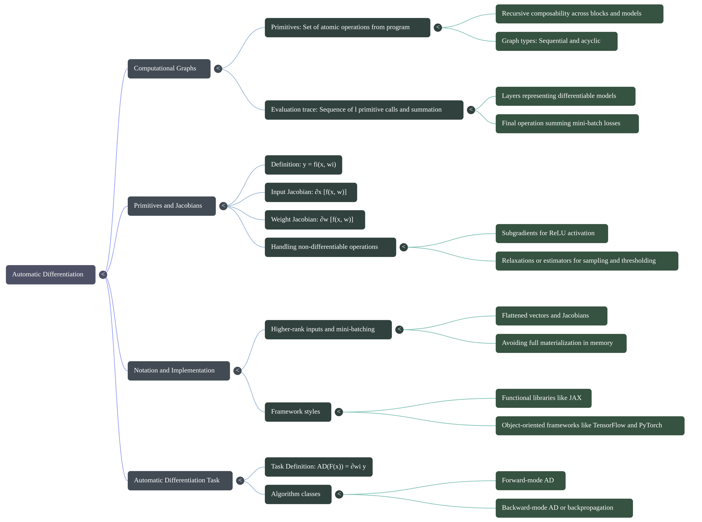

Automatic Differentiation: Primitives, Jacobians, and Evaluation Traces
Introduction
How do modern AI frameworks like PyTorch, TensorFlow, and JAX train massive neural networks with billions of parameters without collapsing under the computational weight of calculus? The secret lies in Automatic Differentiation (AD) a mathematical and computational paradigm that transforms complex software programs into efficient gradient-computing machines.
- Deconstruct complex computational graphs into atomic building blocks called primitives.
- Differentiate between input Jacobians and weight Jacobians and predict their dimensions across single-vector and mini-batched inputs.
- Explain how vectorization converts high-rank tensor operations into flattened matrix representations to save computational overhead.
- Contrast functional (JAX) and object-oriented (PyTorch/TensorFlow) software paradigms for automatic differentiation.
- Formulate the formal task of Automatic Differentiation using program evaluation traces.
An Intuitive Mental Model: Imagine Your Factory
Before diving deep into the mathematical formalism of tensors and Jacobians, let's build an intuitive mental model. Imagine you own a manufacturing factory with three departments:
- Department 1: Receives raw materials.
- Department 2: Processes and refines the materials.
- Department 3: Inspects the final assembled product.
Each department has workers, and each worker is responsible for a particular job:
RAW MATERIALS
|
v
+-------------------+
| DEPARTMENT 1 |
| Billions of |
| workers |
+-------------------+
|
v
+-------------------+
| DEPARTMENT 2 |
| Billions of |
| workers |
+-------------------+
|
v
+-------------------+
| DEPARTMENT 3 |
| Billions of |
| workers |
+-------------------+
|
v
FINAL PRODUCT
Every worker performs a small operation, and the result goes to the next worker or department. Now, let's map this directly to a deep neural network:
| Factory Analogy | Neural Network Equivalent |
|---|---|
| Raw materials | Input data ($x$) |
| Workers performing operations | Mathematical operations (primitives $f_i$) |
| Departments | Layers (hidden representations $h_i$) |
| Worker's adjustable settings | Model parameters / weights ($w$) |
| Final product inspection | Loss calculation ($L$) |
| Factory manager | Training algorithm / Optimizer (e.g., Adam, SGD) |
| Improving workers' settings | Updating model weights ($w \leftarrow w - \eta \nabla L$) |
1. Your Factory Produces the Wrong Product!
Suppose your factory manufactures water bottles. You want each bottle to contain exactly 1.0 litre of water. However, after running the factory, you discover that the final bottle contains only 0.6 litres.
In machine learning, we call this error the loss ($L$). The loss quantifies exactly how far the model's prediction is from the target:
- Loss = 0: Perfect prediction for this sample.
- Small loss: Prediction is close to the target.
- Large loss: Prediction is far from the target.
Your job as the factory owner is to reduce this loss. But here is the central dilemma: You have billions of adjustable settings. Which settings should you change, and by how much? This is the exact problem backpropagation and automatic differentiation solve.
2. Every Worker Has an Adjustable Setting
Let's simplify the factory to just three workers in sequence. Each worker has an adjustable dial that controls how they perform their job:
Raw Material
|
v
+-----------+
| Worker 1 | <-- Dial w1
+-----------+
|
v
+-----------+
| Worker 2 | <-- Dial w2
+-----------+
|
v
+-----------+
| Worker 3 | <-- Dial w3
+-----------+
|
v
Final Product
|
v
Calculate Loss
In a neural network, these dials represent weights ($w$). A weight determines how strongly one value influences another during a mathematical operation. For example, a worker might multiply the incoming value by their dial setting:
If the input is $5$ and the dial is set to $2$:
If the dial is turned to $3$:
Changing the dial changes the worker's output. Similarly, changing a neural network's weights changes its predictions. Now we need to answer a crucial question: How do you know which dial to adjust?
3. The Factory Manager Needs to Understand the Effect of Every Dial
Imagine you turn Worker 1's dial:
- That change affects Worker 1's output.
- Worker 1's output affects Worker 2.
- Worker 2's output affects Worker 3.
- Worker 3's output affects the final product.
- Therefore, changing Worker 1's dial cascades through the chain and alters the final loss!
However, changing Worker 3's dial directly affects the product right before inspection, having a very different effect on the loss. You need to calculate how sensitive the final loss is to each individual dial:
Here:
- $L$ is the final scalar loss.
- $w_1, w_2, w_3$ are the workers' dials (parameters).
- The partial derivative tells you how the loss changes when you make an infinitesimal adjustment to a particular dial, keeping all other settings fixed.
When applied to model parameters, this collection of derivatives is called the gradient. Think of it as a precise message to the factory manager: "If you slightly increase dial $w_i$, will the final error increase or decrease, and by how much?" That is the exact signal needed to optimize the factory.
4. But How Do We Calculate the Effect of Billions of Dials?
This is where Automatic Differentiation reveals its magic. You could try changing every dial individually by a tiny amount, running the entire factory again, and measuring whether the error improved. But imagine doing that for billions of dials! It would require billions of full forward runs of the factory for every single training step—an impossible computational cost.
Instead, Automatic Differentiation calculates all gradients simultaneously by leveraging the mathematical rules of the operations already performed. The trick is to split execution into two directions:
Direction 1: The Forward Pass
First, let the factory operate normally. Each worker receives an input, executes their specific operation, and passes the result forward:
INPUT
|
v
Worker 1
|
v
Worker 2
|
v
Worker 3
|
v
FINAL PRODUCT
|
v
CALCULATE LOSS
During this pass, the system caches intermediate values:
- What did Worker 1 receive?
- What did Worker 1 produce?
- What did Worker 2 produce?
- What was the final prediction and loss?
Notice that we haven't updated any dials yet. We are simply running the factory and measuring its performance.
Direction 2: The Backward Pass (Backpropagation)
Now the factory manager knows the final product is defective ($L = 0.16$). Instead of restarting from the beginning, the manager starts at the final loss and works backward:
INPUT
|
v
Worker 1
^
|
Worker 2
^
|
Worker 3
^
|
FINAL PRODUCT
|
v
CALCULATE LOSS
The backward pass recursively propagates how the loss depends on the preceding operations and their parameters:
- How sensitive is the loss to Worker 3's output?
- How does Worker 3's output depend on Worker 2's output?
- How does Worker 2's output depend on Worker 1's output?
- How does the loss depend on each worker's dial ($w_3, w_2, w_1$)?
The chain rule of calculus allows us to combine these local sensitivities together cleanly. This backward calculation is what we call backpropagation. The system never needs to test dials one-by-one; it computes exact gradients for all dials in a single backward sweep!
The Building Blocks: Primitives and Jacobians
Imagine taking a complex recipe say, a multi-layer deep neural network and breaking it down into its basic culinary actions: chopping, boiling, whisking. In automatic differentiation, these basic building blocks are called primitives.
A primitive $y = f_i(x, w_i)$ is an atomic operation that takes an input vector $x$ (with shape $c_i$), parameterized by a weight vector $w_i$ (with shape $p_i$), and produces an output vector $y$ (with shape $c_i'$). Primitives are wonderfully flexible: a primitive might represent a simple matrix multiplication, a fully-connected layer with an activation function, or even an entire modular neural network block. This property of recursive composability allows us to chain simple functions into arbitrary computational graphs.
Because our computational models are built on differential calculus, we assume that for every primitive, we know how to compute two critical partial derivative matrices called Jacobians:
- Input Jacobian ($\partial_x [f(x, w)]$): Measures how sensitive the output $y$ is to changes in the input $x$. Its shape is $(c', c)$, where $c'$ is the output vector dimension and $c$ is the input vector dimension: $$\left( \frac{\partial y}{\partial x} \right)_{j, k} = \frac{\partial y_j}{\partial x_k}$$
- Weight Jacobian ($\partial_w [f(x, w)]$): Measures how sensitive the output $y$ is to changes in the trainable weights $w$. Its shape is $(c', p)$, where $p$ is the parameter vector dimension: $$\left( \frac{\partial y}{\partial w} \right)_{j, k} = \frac{\partial y_j}{\partial w_k}$$
What happens if an operation isn't perfectly smooth and differentiable everywhere?
For continuous primitives with isolated non-differentiable points—such as the ReLU activation function at $x = 0$ we incorporate them using subgradients (conventionally setting the derivative at $x=0$ to $0$ or $1$). For non-differentiable operations like discrete sampling or hard thresholding, we can apply gradient relaxations (e.g., Gumbel-Softmax) or stochastic estimators to keep the differentiation engine running smoothly.
Navigating High-Rank Tensors: Vectorization and Framework Architecture
In real-world deep learning, we rarely process a single isolated input vector at a time. Instead, we bundle inputs into mini-batches. But mini-batching introduces high-rank tensors that can quickly become a memory nightmare if handled naively.
Consider a basic fully-connected layer operating on a mini-batch:
Here:
- The input matrix $X$ has shape $(n, c)$ (where $n$ is the mini-batch size and $c$ is the feature dimension).
- The weight matrix $W$ has shape $(c, c')$.
- The bias $b$ has shape $(c')$.
- The resulting output matrix has shape $(n, c')$.
If we compute partial derivatives directly on these multi-dimensional tensors, the input Jacobian ends up with a 4D shape of $(n, c', n, c)$, and the weight Jacobian takes a 4D shape of $(n, c', c, c')$.
To keep our mathematical equations clean and unified, we perform vectorization (or flattening):
- We flatten the input into a single vector $x = \text{vect}(X)$ of size $nc$.
- We concatenate parameter vectors into $w = [\text{vect}(W); b]$ of size $cc' + c'$.
The flattened Jacobians collapse neatly into standard 2D matrices of shapes $(nc', nc)$ and $(nc', cc')$.
When AD theory refers to the "input size $c$", it means the product of all input dimensions including the mini-batch size $n$. This flattening highlights a fundamental rule of practical automatic differentiation: we rarely materialize these full Jacobian matrices in memory. Fully materializing a matrix of shape $(nc', nc)$ for millions of parameters would instantly exhaust GPU VRAM. Instead, frameworks compute vector-Jacobian products (VJPs) on the fly!
How Math Shapes Framework Architecture
This underlying mathematical formulation directly dictates how software libraries are architected:
| Paradigm | Functional Style (e.g., JAX) | Object-Oriented Style (e.g., PyTorch / TensorFlow) |
|---|---|---|
| Philosophy | Pure mathematical function transformations | Stateful layers encapsulated inside class objects |
| Parameters $w$ | Passed explicitly as function arguments | Stored as internal attributes (`self.weight`, `self.bias`) |
| Differentiation | Higher-order functions (`jax.grad(f)`, `jax.vjp`) | Tracing tape / dynamically generated graph (`loss.backward()`) |
| Shape Resolution | Explicit shapes required ahead of time | Supports lazy initialization (parameter allocation upon first input) |
The Evaluation Trace and the Core Task of Automatic Differentiation
Now that we have established primitives and vector math, let's examine how an entire program executes from start to finish.
When an input $x$ flows through a sequence of $l$ primitive calls followed by a final summation, it creates what is known as an evaluation trace:
In this program, the first $l - 1$ primitives represent the neural network layers, primitive $l$ computes a per-input loss (such as cross-entropy), and the final operation sums the losses across the mini-batch. The output $y = F(x)$ of our program is always a scalar, which is essential for numerical optimization algorithms.
Given a program $F(x)$ composed of a sequence of differentiable primitives, automatic differentiation (AD) refers to the task of simultaneously and efficiently computing all weight Jacobians of the program given knowledge of the computational graph and all individual input and weight Jacobians: $$\text{AD}(F(x)) = \left\{ \frac{\partial y}{\partial w_i} \right\}_{i=1}^l$$
The chain rule tells us that the gradient of composed functions is simply the matrix product of individual Jacobian matrices. However, how we multiply these matrices determines the computational efficiency:
- Forward-mode AD: Accumulates Jacobians from the input forward toward the scalar output ($J_l \cdot (J_{l-1} \dots (J_2 \cdot J_1))$). Ideal when the number of inputs is much smaller than the number of outputs ($c \ll c'$).
- Backward-mode AD (Backpropagation): Traverses backwards from the final scalar loss output toward the inputs ($((J_l \cdot J_{l-1}) \dots J_2) \cdot J_1$). Ideal when the output is a single scalar and the parameter count is massive ($c' = 1 \ll p$).
Because neural networks map high-dimensional parameter spaces ($p \approx 10^7 - 10^{11}$) to a single scalar loss $y$, backward-mode AD is dramatically more efficient,requiring only one backward pass to compute gradients for all parameters. While this formulation uses a sequential trace, the principles extend directly to general acyclic computational graphs and models with parameter sharing across layers.

Summary & Key Takeaways
Automatic Differentiation transforms programs into efficient gradient calculation engines by decomposing operations into primitives and chaining their Jacobians via evaluation traces.
- Primitives & Composability: Programs consist of recursively composable atomic operations $y = f_i(x, w_i)$, each supplying an input Jacobian $\partial_x [f]$ and a weight Jacobian $\partial_w [f]$.
- Vectorization & Memory: Mini-batched high-rank tensors are flattened into 2D vectors $(nc', nc)$ and $(nc', cc')$ to streamline analysis, though explicit Jacobian materialization is avoided in memory via VJPs.
- Framework Design: Functional frameworks (JAX) mirror explicit mathematical arguments, whereas Object-Oriented frameworks (PyTorch/TensorFlow) encapsulate weights inside stateful layer objects with lazy initialization.
- Evaluation Trace: A sequential execution trace aggregates layer outputs into a per-input loss and a scalar sum $y = F(x)$.
- The AD Task: AD calculates all weight Jacobians $\{\partial_{w_i} y\}_{i=1}^l$ simultaneously, where reverse-mode AD (backpropagation) provides superior computational scalability for scalar outputs.